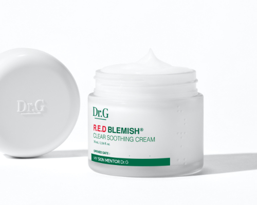
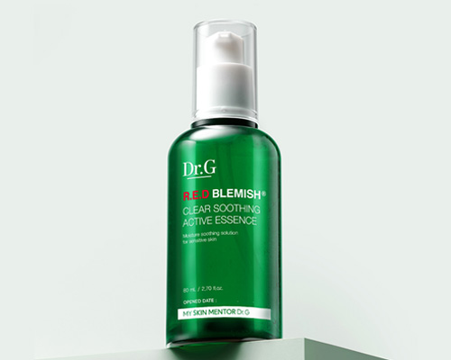
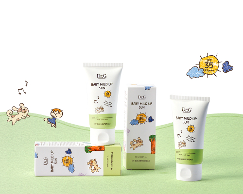
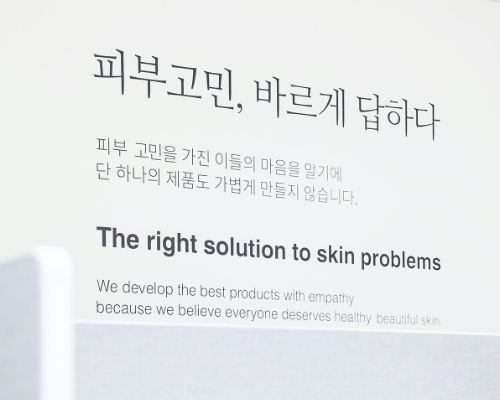
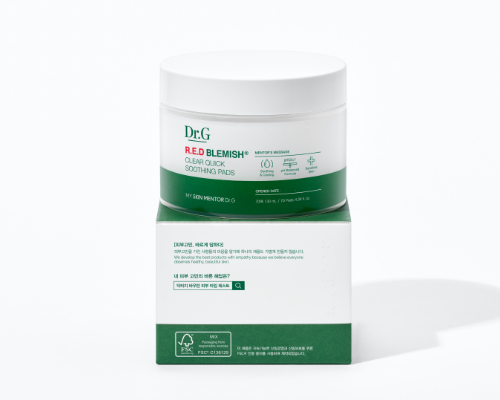
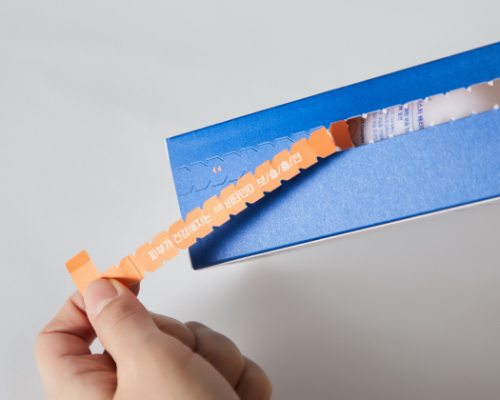
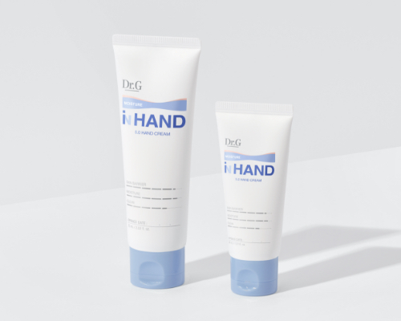

닥터지의 노력은 제품 개발부터
제조, 유통까지 전 과정에 담겨 있습니다.
닥터지는 지속 가능한 뷰티를 추구합니다.
모두가 가치 있게 제품을 소비하고 활용할 수 있도록 모든 제품 패키지에 점자를 표기하고 있으며,
친환경 포장재 사용 등 환경 보호를 위한 작은 실천에도 앞장서고 있습니다.
특히 의료사각지대 아이들을 위해 초록우산 어린이재단을 정기적으로 후원하며,
피부 전문가 양성을 위한 학술 지원 등 다양한 CSV 활동을 전개해 나가고 있습니다.
앞으로도 닥터지는 피부 건강을 통해 사회 곳곳에 긍정적인 시너지를 낼 수 있는
‘선한 영향력’을 실천하는 기업이 되겠습니다.
모든 이의 피부 고민에 대한 우리의 실천
- 
-
점자 표기
닥터지는 누구나 원하는 제품을 선택하고 소비자의 권리를 누릴 자격이 있다고 생각합니다.
닥터지의 전 제품에는 시각 장애인을 위한 점자 표기가 되어 있습니다.
- 
-
Opened Date
화장품 유통기한은 개봉하지 않은 상태로, 안전한 기한을 표기한 것이기 때문에 개봉 후에는 유통기한이 훨씬 짧아집니다. 이러한 점을 극복하기 위해 Opened Date (개봉일)을 기록하는 것이 좋습니다.
화장품 개봉 후, 권장 사용기간은 12개월입니다. 작지만 내 피부를 지키는 중요한 습관!
화장품 개봉 시, 피부 건강을 위해 개봉 일자를 기록하세요.
- 
-
초록우산 정기 후원
닥터지는 피부 고민으로 어려움을 겪는 어린이들을 돕기 위해 초록우산 어린이재단과 인연을 맺고 정기적인 후원을 실시합니다. 또한 닥터지 베이비 마일드 업 선 구매 시, 구매 금액의 10%를 초록 우산 어린이 재단에 기부합니다.
- 
-
피부과학연구재단 정기 지원
닥터지는 국내 피부과학 연구 역량과 경쟁력 향상을 위해 피부과학연구 재단에 매년 연구비를 지원합니다. 국내 피부과 전공의와 교수들의 학술 지원과 함께 피부 과학 연구를 위해 노력하며 피부과학으로 사람들을 건강하고 행복하게 만들자는 기업 철학이 담긴 공헌 활동을 전개합니다.
지속 가능한 환경을 위한 우리의 노력

-
친환경 종이 포장재
튼튼한 완충은 물론, 100% 재활용이 가능한 친환경 종이 완충제 ‘지아미’를 사용 하여 과다한 포장재 사용 및 폐기물의 발생을 줄이기 위해 노력합니다.
- 
-
FSC® 인증지 및 소이잉크 사용
지속가능한 벌목과 공정으로 생산되는 FSC® 인증지와 소이잉크, 감귤지 등 자연에서 얻은 부산물로 만든 원료를 대폭 적용한 2차 포장재를 사용합니다. 자원 순환이 가능한 디자인에 대한 끊임없는 고민으로 제품을 개발합니다.
- 
-
보다 쉬운 분리배출 가이드 제공
지류 패키지 확대로 분리수거와 분해가 용이하게, 제품 라벨에 분리배출 가이드를 보다 더 상세하게 제공하여 정확한 분리수거를 위해 노력합니다.
- 
-
탄소배출 감소 원료 튜브 용기
제품의 원료 채취와 생산, 수송, 유통, 사용, 폐기 등 전 과정에서 탄소배출을 20% 정도 줄인 원료가 30% 정도 포함된 튜브로 제작되었습니다.